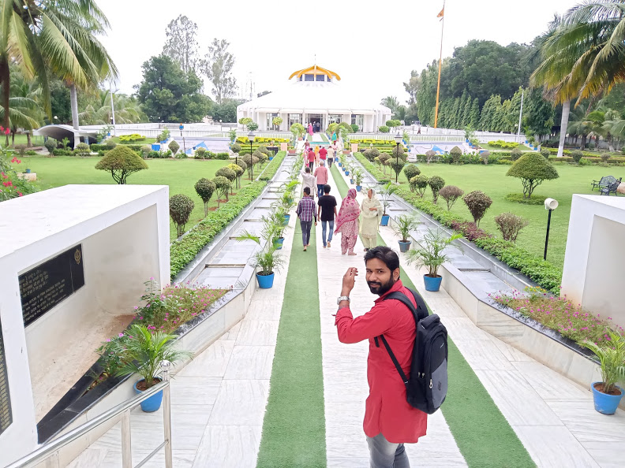

VIKASH KUMAR
SOFTWARE ENGINEER
CAREER OBJECTIVE
To be able to work for encouraging and stable company that will assist me in developing, improving and obtaning the necessary skills in order to beacome the best engineer possible.
EDUCATION
2019
2015
2012
2009
Master of Computer Applications
Bachelor of Computer Application
Intermediate [12th Board]
Matriculation [10th Board]
TECHNICAL SKILLS
HTML, CSS, JavaScript
AngularJS and Angular 7 and Angular Material
Express JS, Node JS
Terraform, AWS, Jenkins, Digital Ocean
MongoDB, AWS DocumentDB, MYSQL
AngularJS and Angular 7 and Angular Material
Express JS, Node JS
Terraform, AWS, Jenkins, Digital Ocean
MongoDB, AWS DocumentDB, MYSQL
EXPERIENCE
ENGINEER
Caribou Technologies Inc. Hyderabad, India
January 2020 to Present
- Part of AWS/Devops Team where Migration of projects done from DigitalOcean to AWS.
- Responsible for Moving the entire Database from MongoDB Atlas to AWS DocumentDB.
- Give responsibilities for the R&D (Research and Development) work for the new features.
- Assigning and checking the task to the Trainees/Interns and follow up their progress.
- Worked with three major projects and was responsible mainly for frontend development.
- Participating in standup meetings with team and clients and showcasing progress.
- Working with Technical Leads to determine application architecture.
- Implementing web design and development principles to build stable software.
- Experienced working remotely and collaborating with the team members over slack and other channels.
- Improvising, Debugging and fixing the issue in the existing project.
ASSOCIATE ENGINEER
Caribou Technologies Inc. Hyderabad, India
July 2019 to December 2019
- Bringing mockups to life using HTML, CSS, JavaScript, AngularJs(1.x), Angular 7.
- Collaborating closely with the team to support projects during all phases of delivery.
- Building websites that are responsive and usable.
- Communicating technical issues in an understandable manner to the team and clients.
- Identifying innovative ideas and proof of concepts according to project requirements.
- Providing guidance and troubleshooting support to clients.
- Testing to identify bugs and technical issues before and after deploying.
- Documenting bug reports, tickets, and any code changes.
- Keep updating and creating the JIRA board, deployment of the Project in different phases using Jenkins.
- Designed a web console emulator where request and response are done over MQTT.
- Usually being a part of the Research and Development team whenever new features have been introduced.
INTERNSHIP
Caribou Technologies Inc. Hyderabad, India
January 2019 to June 2019
- Shadowing senior team members to get a feel for their day-to-day responsibilities.
- Taking on small modules related to live projects and followed by presenting my work to the managing team.
- Assisting with process improvements, making suggestions where needed.
- Brainstorming with team members to come up with new application concepts.
- Testing software to detect and correct errors, improve performance, and upgrade.
- Regularly consulted with clients regarding projects, proposals and development progress and challenges.
- Learned new technologies during these periods like AngularJS(1.x), MongoDB, GIT Version Control and NodeJS.